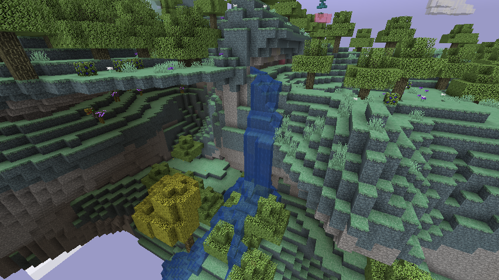
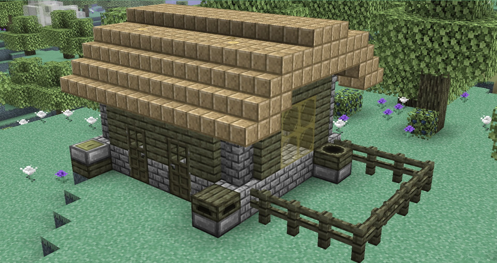
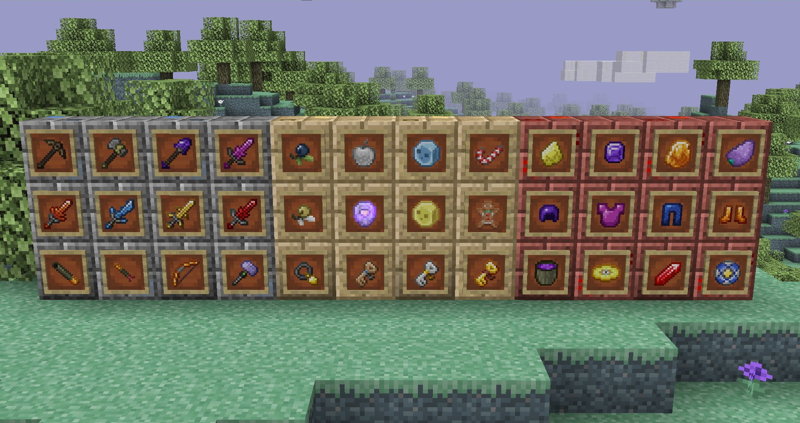
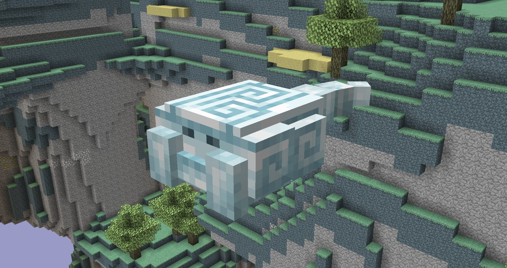

Notice:
While Aether II is still being rewritten for new versions of Minecraft, this page will only have Aether I related content.
Aether I
With Aether I, we aim to maintain the classic experience of the original Aether mod released back in 2011 while also making small adjustments to make it fit in with modern versions of Minecraft.
New Dimension
The Aether is a new dimension consisting of floating islands for players to traverse. The islands have new items for players to collect, new mobs to interact with, and dungeons to conquer.
Blocks
The Aether adds new blocks for players to build with. Some are naturally generated, and some have to be crafted.
Items
The Aether adds new items to use. Tools collected in the Aether have unique effects not found in the base game.
Mobs
The Aether is packed with new mobs for you to interact with.